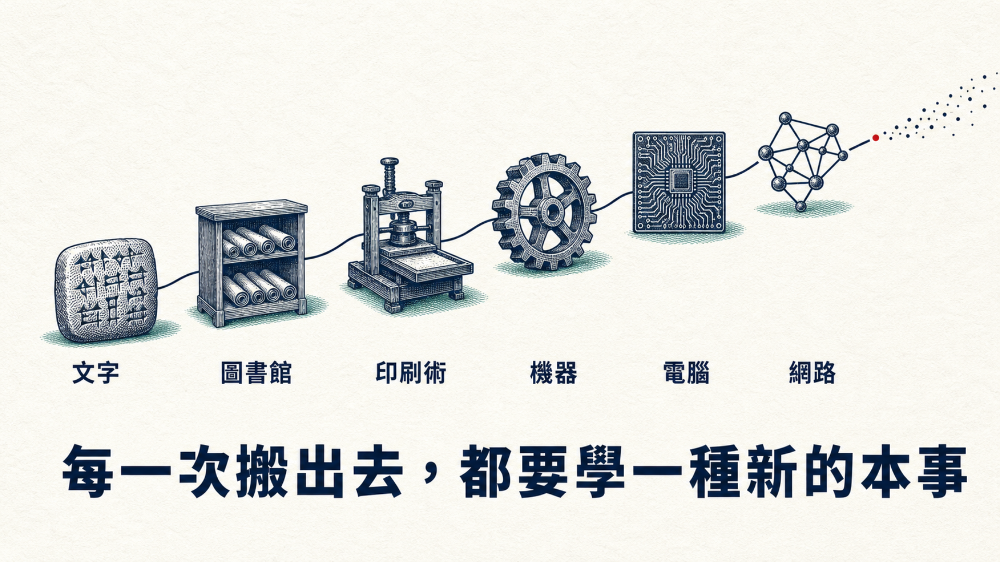
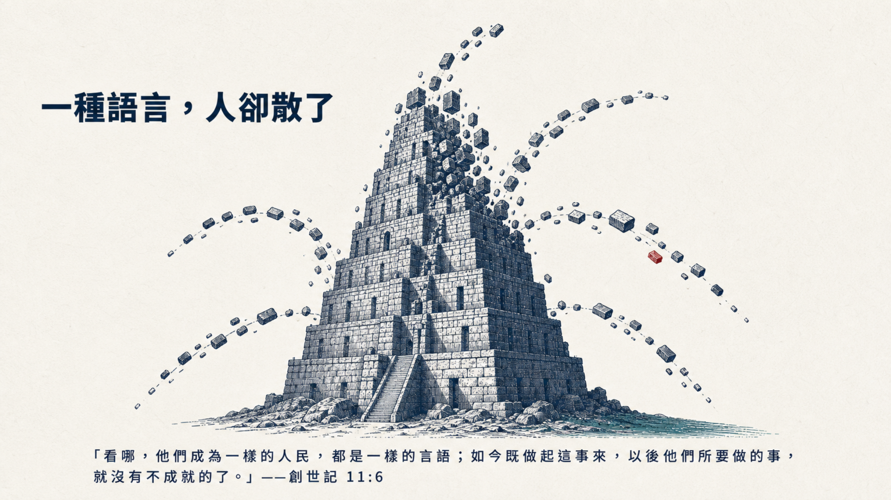
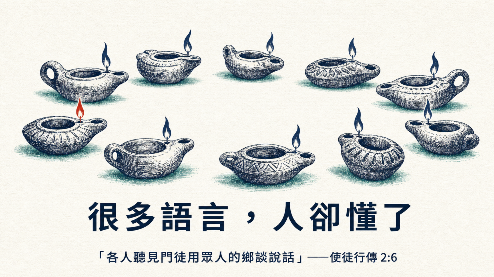
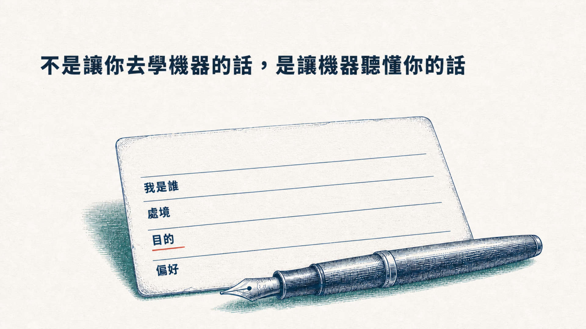

今天不是聽講座。這堂課結束時，你會帶著一個做好的東西回家。

三週後駕照筆試——「和 AI 做一個練習 App。」
偏偏，電腦壞了。
手邊沒了電腦，夢卻不想停。
構想規劃清楚 → 交接文件 → 爸爸分派給兩個 AI。
這個孩子多學了什麼技術？沒有。
AI 是一位
第一天到職、聰明絕頂、
但完全不認識你的新同事。
你不會對第一天報到的新同事丟一句話就要成品，你會先讓他認識你。AI 一樣。
看著孩子把「我想要」變成「我做到了」——這就是今天要給你的東西。
判斷、直覺、承擔後果——這一層永遠是人的。
AI 再強也讀不到這一層。它不認識你，是預設值。
外 化 Externalization整堂課只練一個動作：把 AI 不知道的東西，說給它聽。
把知識外部化到系統裡。過去是筆記檔案櫃——會記，不會動。
差別不在工具多強，在它認不認識你。
Nonaka 三十年前就講清楚：知識始於個人外化；AI 時代唯一改變的是——外化成本從「寫手冊給人看」暴跌到「講給 AI 聽」。
術語、SOP、慣例、決策史——團隊的共同記憶。
把共同記憶餵給一個共享的 AI——新人第一天就像老手。
Guiding Principle · 指導方針 想學東西，問對問題是關鍵；想把事做成，從好的交接開始——今天，練後者。 今天不練提問，練交接。 Stop prompting, start briefing. 對方對你的了解深度，決定互動品質。人如此，AI 也是。
教 AI 認識你，答案立刻不同。
掃碼開卡每週重複的事，一鍵完成。
掃碼開卡懂你們術語和做法的老同事。
掃碼開卡交接得好的團隊
成績 84.7%
交接得普通的團隊
成績 66.1%
大腦一樣，差別全部在「它多了解狀況」。可量測，不是感覺。
你今天的一次外化，
放大就是團隊與事工的
共同記憶。
想像你的小組、你的同工團隊，
有一個懂你們術語、懂你們慣例的 AI 同事——
它，從今天你這張脈絡卡開始。
每次開新對話，先貼脈絡卡。一週後你會回不去。
今天不練提問，練交接。


